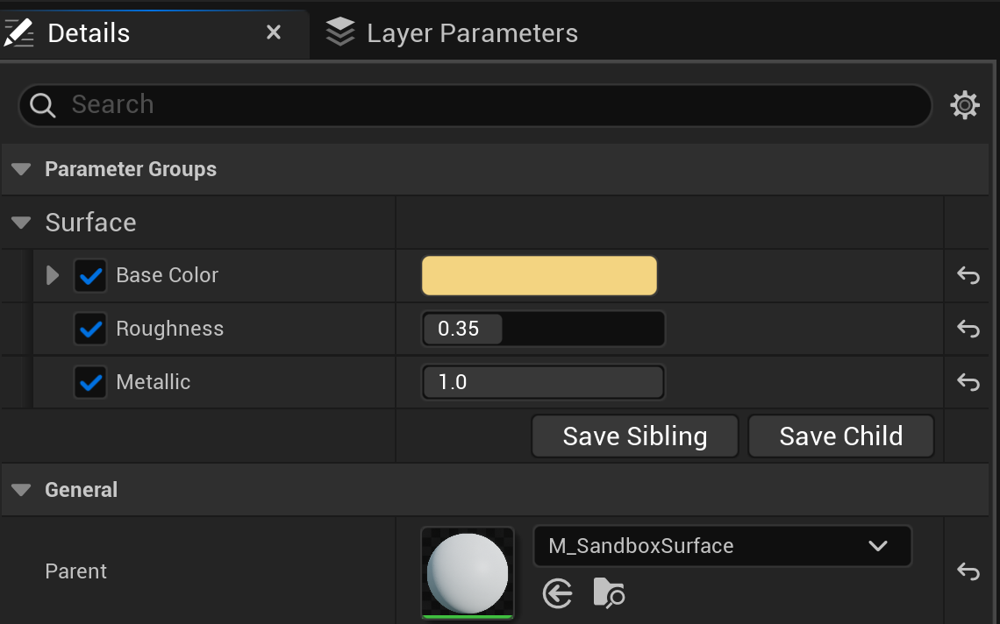
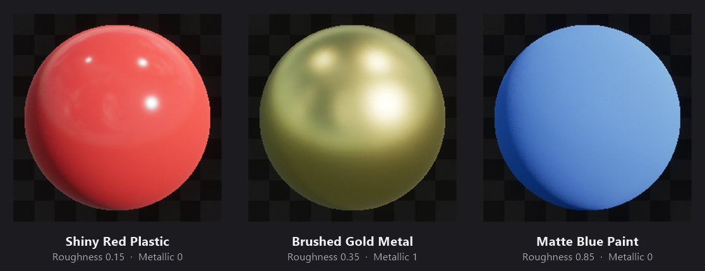

🚀 Your First AI-Driven Workflow
The bridge is built and verified. Now you put it to work. In this final lesson you will run a real workflow end to end: an assistant authors a small reusable material and a set of material instances in your project, entirely from a plain-language request. The star of the lesson is not the clicking, because the assistant does that. The skill that matters most is learning to ask well, then review what comes back. That is the habit that turns an AI assistant into a dependable collaborator.
⚠️ Experimental in UE 5.8
The Unreal MCP plugin is marked Experimental in Unreal Engine 5.8. The exact tool names, log wording, and editor panels shown here may change in future engine versions. The workflow habits you learn, phrasing a request and reviewing the result, stay useful no matter how the details move.
🎯 Learning Objectives
By the end of this lesson, you will be able to:
- Break a request into its four useful parts: goal, specifics, constraints, and acceptance
- Turn a vague prompt into a clear one and predict how the results differ
- Read the Output Log to watch your request become a sequence of editor tool calls
- Review an AI-authored result and correct it with a small, scoped follow-up
- Apply the human-in-the-loop safety habits from Lesson 11.1 to a real task
Estimated Time: 25-35 minutes
Prerequisites: Lessons 11.1 and 11.2. A working Unreal Engine 5.8 project with the Unreal MCP bridge running and a client connected.
In This Lesson
Before You Begin
By now the pieces are in place. Lesson 11.1 explained the architecture: your words become tool calls, the embedded server receives them, the Toolset Registry routes each one to the right editor toolset, and the editor does the work. Lesson 11.2 turned that idea into a live bridge you verified in the Output Log. This lesson is where you drive it.
To keep things concrete, the whole lesson follows one small workflow. You will ask an assistant to build a reusable master material with a few adjustable settings, then spin off three material instances that each look different. It is a genuinely useful task, it is quick, and the result is easy to judge with your eyes. Everything the assistant does here it does through the exact toolsets you met in Lesson 11.1.
⚠️ Work in a Sandbox
Follow the safety habits from Lesson 11.1. Use a test project or one under version control, and ask the assistant to keep its work in a clearly named sandbox folder so it is obvious what is safe to remove. You stay in control: review each result, and undo freely if something is not what you meant.
Anatomy of a Good Request
An AI assistant is powerful but literal. It does its best with whatever you give it, so the quality of your request shapes the quality of the result. The good news is that a strong request is not about clever wording. It is about including four simple parts. Once you can name them, you can write a good prompt every time.
Figure: A good request names its goal, fills in the specifics, states its constraints, and describes how you will know it worked.
You do not have to label these parts out loud, and you do not have to write a paragraph. You just have to make sure they are present. A one-line request that quietly includes all four beats a long, wandering one that leaves the assistant guessing.
✅ Pro Tip
Specific beats polite. “Please make something nice” gives the assistant nothing to aim at, while “a matte blue paint, Roughness around 0.85” gives it a target it can hit and you can check. Say what you mean plainly.
From Vague to Clear
Watch the four parts do their work. Here is the same task expressed two ways. The first is what many people type first. The second is what you will actually send.
❌ Vague
“Make me some materials.”
Every part is missing. How many materials? What kind? Where should they go? What should they look like when done? The assistant has to guess all of it. It might create one material or ten, put them anywhere, and pick looks you did not want. Worse, without a constraint it has no reason to avoid changing your open level. A vague request does not save you time, it just moves the work to a cleanup step later.
✅ Clear
“In a new sandbox folder, create a master material with three exposed parameters: a Base Color, a Roughness value, and a Metallic value. Then make three material instances from it: a shiny red plastic, a brushed gold metal, and a matte blue paint. Show me each on a preview sphere. Do not modify my current level, and delete the sandbox folder when we are done.”
All four parts are present. The goal is a reusable material plus instances. The specifics name the parameters and the three looks. The constraints pin the work to a sandbox folder and protect your level. The acceptance is a preview sphere for each instance. There is almost nothing left to guess, and the closing cleanup instruction keeps your project tidy.
Notice that the clear version is only a little longer, and none of the extra words are decorative. Each one closes a gap the assistant would otherwise have to fill on its own. This is the request we will run.
Watch It Work: Authoring a Material
Send the clear request and the assistant gets to work. It does not perform one giant action. It breaks the goal into a series of small, precise editor operations and dispatches each one across the bridge. You do not have to imagine this happening, because the Output Log records every step. Filter it to the material toolsets, as you learned in Lesson 11.2, and you can read the workflow unfold line by line.

Figure: Your one request, seen as the editor sees it. Each “Dispatching toolset tool” line is a single action the assistant took over the bridge. · Experimental in UE 5.8.
Read the log top to bottom and the story is plain. The assistant adds expression nodes for the three parameters, connects them to the material outputs, and recompiles so the master material is ready. Then it creates three material instances and sets their values, one set_vector_parameter or set_scalar_parameter at a time, before listing the parameters to confirm the result. That is your sentence, translated into the toolsets from Lesson 11.1 and dispatched through the bridge from Lesson 11.2.
The result is not a throwaway preview. It is a set of real, saved assets you can open and edit by hand at any time. Open the gold instance and its Details panel shows the parameters the assistant exposed, each with an override checkbox, all inheriting from the master material:

Figure: The gold instance the assistant authored. The three exposed parameters (Base Color, Roughness, Metallic) sit in a Surface group, and the Parent points back to the master material. Fully editable by hand. · Experimental in UE 5.8.
💡 Why This Matters
The assistant did not hand you a picture of a material. It built the same asset you would have built by hand, using the same editor operations, and left it in place for you to keep working with. AI-assisted authoring accelerates your workflow, it does not replace the project you own.
Reviewing and Iterating
The workflow is not finished when the assistant stops typing. It is finished when you have looked at the result and agreed with it. This is the human-in-the-loop step from Lesson 11.1, and it is the most important habit in the whole module. Start with the acceptance criterion you set: you asked to see each instance on a preview sphere, so look at them.

Figure: The payoff. Three material instances, one shared master, three distinct looks: glossy plastic, reflective metal, and flat matte paint. · Experimental in UE 5.8.
This is exactly what the request described. The plastic is glossy, the metal is reflective and warm, and the paint is flat. When the result matches your intent, you are done. When it does not, you do not start over. You send a small, scoped follow-up.
💬 Iterating with a Follow-up
Suppose the gold read a little too rough for your taste. You would not rebuild anything. You would say: “Set the gold instance's Roughness to 0.2.” That is one parameter on one instance, easy for the assistant to change and easy for you to verify. Small, specific follow-ups keep both of you in sync and keep every change reviewable.
Build a quick review checklist into your habit and every workflow stays under your control:
A four-question review
- Did it do what I meant? Compare the result to your goal, not just your words.
- Is it in the right place? Confirm the work landed in the sandbox folder and nowhere else.
- Did anything unintended change? A glance at the Output Log or your level answers this.
- Does it look right? Trust your eyes on the visual result, as you did with the spheres.
Your Turn: Practice Prompts
The best way to build the habit is to run a few requests of your own. Work in a sandbox folder, review each result with the four-question checklist, and undo anything you do not like. Here are three prompts that grow in richness. Read each one and spot the goal, specifics, constraints, and acceptance before you send it.
1. Warm up
“In my sandbox folder, add two more instances of the master material: a matte black rubber and a polished white ceramic. Show me each on a preview sphere.”
Reuses the master you already have, so it is quick. Notice it still names the looks and asks to see them.
2. A small change across several assets
“For every instance in the sandbox folder, nudge its Roughness up by 0.1, then show me the updated preview spheres side by side. Do not change anything outside that folder.”
This is the kind of repetitive edit that is tedious by hand and quick for an assistant. The constraint keeps the change contained, and the acceptance lets you confirm it.
3. A fresh little build
“In the sandbox folder, create a new emissive material with an exposed Emissive Color and Brightness, then make a warm-orange instance and a cool-cyan instance. Show me both, and tell me which toolsets you used.”
A new master, two instances, and a request for the assistant to report its own steps. Asking it to explain what it did is a good way to learn the toolsets and to double-check its work.
⚠️ Clean Up When You Are Done
Finish the way the worked example did: “Delete the sandbox folder and confirm it is gone.” Naming and removing throwaway work keeps your project tidy and makes it obvious that nothing experimental was left behind. If in doubt, check the folder yourself afterward.
Knowledge Check
Question 1
Which set best describes the four useful parts of a good request?
Correct answer: B · A strong request names its goal, fills in the specifics, states its constraints, and describes how you will know it worked. You do not have to label them, only include them.
Question 2
Why is a specific request usually better than a vague one?
Correct answer: A · An assistant does its best with what you give it. A vague request leaves gaps it has to fill on its own, so a clear one that names the details gets you closer to what you actually wanted.
Question 3
In the Output Log, what does a single “Dispatching toolset tool” line represent?
Correct answer: C · The assistant breaks your goal into small operations and dispatches each one. Every dispatch line names the toolset and tool that ran, so the log reads as a step-by-step record of the workflow.
Question 4
The result is mostly right, but one instance looks a little off. What is the best next move?
Correct answer: B · A narrow follow-up such as “set the gold instance's Roughness to 0.2” is easy for the assistant to apply and easy for you to verify. Small, specific corrections keep every change reviewable.
Question 5
Which habit best keeps experimental AI-assisted authoring safe and recoverable?
Correct answer: C · A sandbox folder isolates throwaway work, review keeps you in the loop, and undo or version control makes any change recoverable. Together they let you experiment freely without risking your project.
Summary
You ran a complete AI-driven workflow, from a single sentence to a set of real, editable assets, and you reviewed the result the whole way. Here is the arc you followed:
Ask well. A good request quietly includes four parts: a goal, the specifics, the constraints, and how you will know it worked. Specific beats vague, and specific beats polite.
Watch it work. Your one sentence became a sequence of small editor operations, each dispatched across the bridge and visible in the Output Log. Those operations left behind genuine, hand-editable assets.
Review and iterate. The workflow ends when you have agreed with the result. Check it against your goal, and when something is off, send a small scoped follow-up rather than starting over.
🔑 Key Takeaways
- A good request has a goal, specifics, constraints, and acceptance
- Clear, specific phrasing gets you closer to what you meant than vague phrasing
- Each Output Log dispatch line is one editor action the assistant took
- The assistant builds real assets you can keep editing by hand
- Review every result, and correct it with small, scoped follow-ups
- A sandbox folder, review, and undo keep experimental work safe
Module Complete
That wraps up Module 11 and the course. You started by learning what AI-assisted workflows are and how the Model Context Protocol connects an assistant to the Unreal Editor. You set up the experimental Unreal MCP bridge and verified it live. And now you have run a real workflow, asking for something in plain language, watching it built through the bridge, and reviewing the result like the collaborator in charge. That last habit, asking clearly and reviewing carefully, is what will carry you as these tools keep evolving toward UE6 and beyond. Go build something.